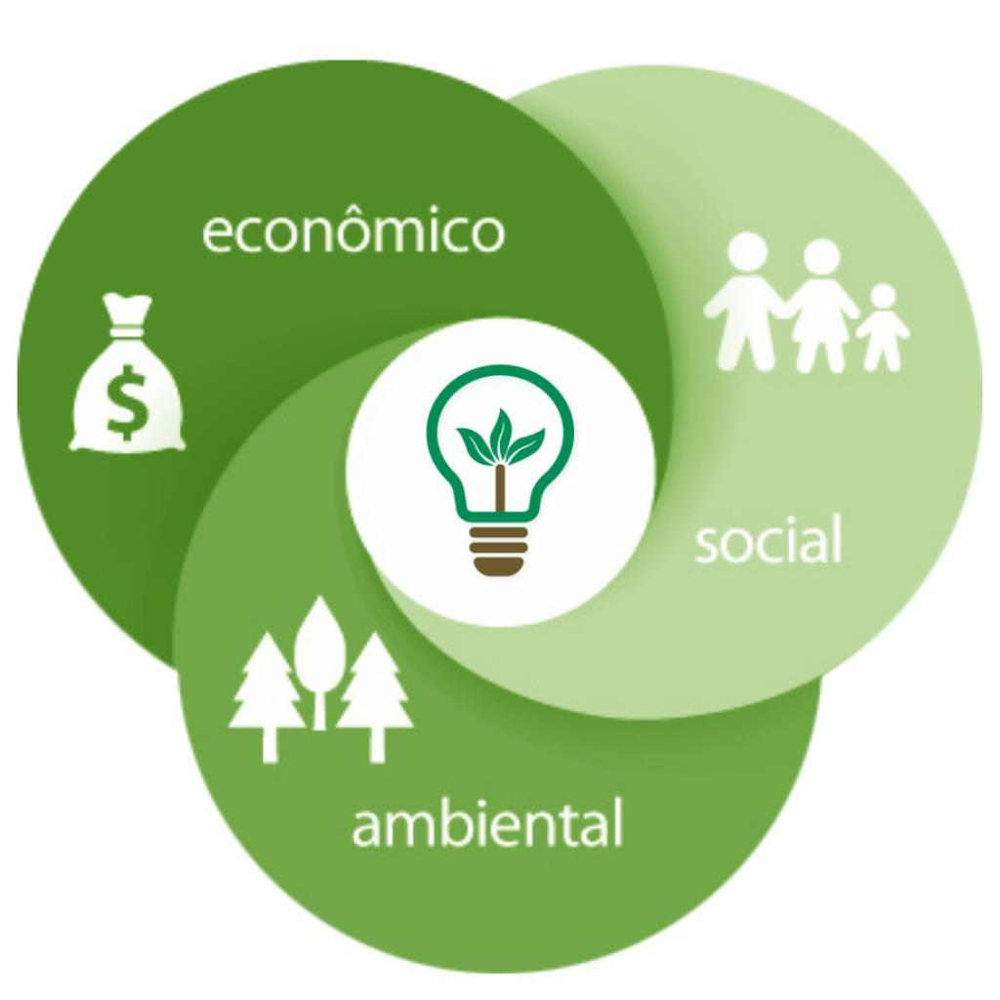

Os pilares

Para que a sustentabilidade aconteça, é necessário levar em conta os seguintes 3 fatores:
- Económico: Relacionado com a produção, distribuição e consumo de bens e serviços. A economia deve considerar a questão social e ambiental.
- Social: Engloba as pessoas e as suas condições de vida como a educação, saúde, violência ou lazer.
- Ambiental: Refere-se aos recursos naturais do planeta e a forma como são utilizados pela sociedade, comunidades ou empresas.